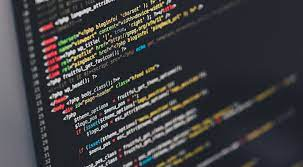

A programação como alternativa para fugir da crise
Por que aprender a programar?
Durante a pandemia da Covid-19, cerca de 3 milhões de pessoas ficaram desempregadas, e muitas delas, lamentavelmente, se encontram em situação precária de vida. Entretanto, uma área que, mesmo com a pandemia, aumentou o seu número de vagas, foi a da informática. Muitas empresas estão a procura de novos profissionais da área com intuito de atualizar seus processos e, através da tecnologia, melhorar sua produção. Nesse sentido, um dos profissionais mais procurados na área da computação, sem dúvidas alguma, é o programador. Segundo a revista Veja, o aumento nas vagas para esse profissional, durante a pandemia, foi de 100%. Logo, é visível que a área da programação é umas das melhores para conseguir uma vaga no atual mercado de trabalho. Porém, não é somente o grande número de vagas de empregos um motivo para aprender programar.
Veja esse vídeo para ver a importância de programar e como a simplicidade é ideal ao programador:
Por que ainda formamos tão poucos programadores?
Segundo o site code.org, a sociedade, em 2022, precisaria de 4 milhões de programadores capacitados para continuar seu desenvolvimento de maneira eficiente e sustentável, entretanto, segundo a mesma instituição, o mundo ainda não tem 40% desse valor.
A situação do Brasil
Infelizmente, o Brasil ainda tem um número muito baixo de profissionais com esse perfil, segundo o UOL, o país forma, somente 47 mil profissionais, onde o número de vagas é de 400 mil. Essa pequena quantidade de profissionais pode fazer com que o brasil fique atrasado em relação aos outros países, na área da tecnologia, o que prejudica todas as áreas da sociedade.
Mas, como aprender a programar?
Como pode ser visto, motivos não faltam para aprender a programação, mas por onde começar?
Começe sempre pelo básico.
Paraçe óbvio, mas muitas pessoas que querem aprender a programar acabam desistindo por tentar pular etapas, para isso não acontecer com você, tente seguir o roteiro abaixo:
Aprenda a lógica de programação
O maior erro dos inciantes, além de pular etapas, é não aprender a lógica de programação, pois se você partir direto para algo mais avançando dentro de uma linguagem, como montar um sistema de automatização de tarefas, sem saber a base de lógica de programação, muito provavelmente,você terá dificuldades em qualquer linguagem que você quiser aprender, pois você ainda não tem o conhecimento do básico. Para lhe ajudar a aprender, vou deixar o link do canal do Curso em Vídeo, no Youtube, que,através dessa playlist, está ensinando maravilhosamente a lógica de programação através da linguagem python.
Começa no básico em qualquer linguagem
Atualmente, existem várias linguagens de programação e todas são eficientes. Obviamente, cada linguagem é mais eficiente em alguma área, mas independente disso, tente aprender o maior números de linguagens possíveis para se atenar as tendências, e sempre começe pelo básico de cada uma.
São exemplos de linguagens:
- Python
- JavaScript
- PHP
- kotlin
- JAVA
- C
- C+
- C#
Todas essas linguagens são ótimas para o desenvolvimento do aprendizado da programação.
Exercite bastante
A prática de exercícios é a melhor forma de aprender a programar, de nada adianta você ver aulas centenas de aulas se você não pratica. Portanto, nunca canse de praticar.
O próximo passo
Com o passar do aprendizado, você irá se interresar mais por uma área dentro da programação, e vai querer se aprofundar nesse asssunto. Para isso, existe várias opções de cursos onlines, de excelente qualidade, para seguir sua carreira. Lembrando que aprender uma tecnologia não é gastar dinheiro e sim investir!